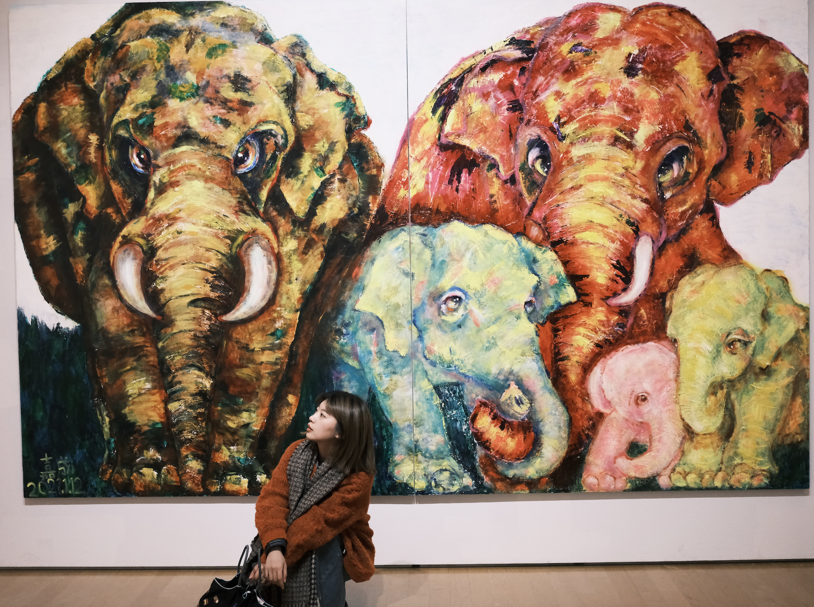

My background moves across architectural design, commercial strategy, and retail operations — allowing me to approach projects not only as visual or business challenges, but as connected systems shaped by space, brand, and performance.
Over the past six years, I have worked across architectural design, design consulting, commercial product strategy, and retail operations. This trajectory has given me hands-on experience in product definition, spatial optimisation, cross-functional coordination, and data-led growth for large-scale offline retail and commercial projects.
What interests me most is the intersection between structure and experience: how spatial thinking can inform strategy, how business systems can shape user journeys, and how design decisions can influence long-term commercial value.
I am currently pursuing an MSc in Digital Transformation Management & Leadership at ESCP Business School, across Paris and London. My current focus is on how generative AI, digital tools, and analytical methods can support more intelligent and adaptive retail systems.
View CV →